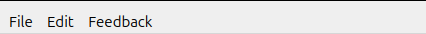
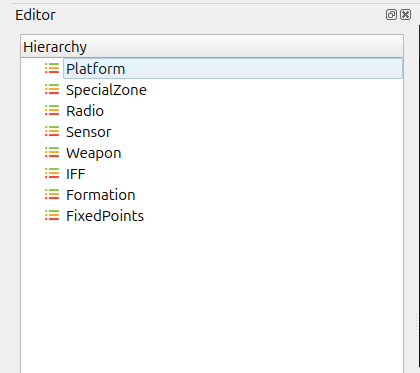
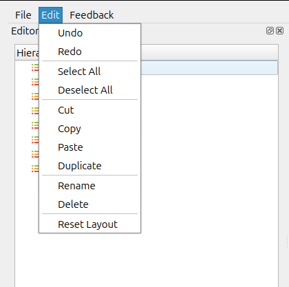

Menu Bar Overview
The application includes a standard Menu Bar at the top of the interface. It provides access to key operations through the File, Edit, and Feedback menus.

File Menu

The File menu provides options for creating, opening, saving, and closing files.
Menu Item |
Description |
|---|---|
New File |
Creates a new project or document. |
Recent Project |
Displays a list of previously opened projects. |
Open File |
Opens an existing file from the system. |
Open File to Library |
Imports an external file into the application’s library. |
Save |
Saves the current file. |
Save As |
Saves the file with a new name or at a different location. |
Exit |
Closes the application. |
Edit Menu

The Edit menu provides essential editing and layout-related functions.
Menu Item |
Description |
|---|---|
Undo |
Reverses the last action performed. |
Redo |
Re-applies an action that was undone. |
Cut |
Removes the selected item and places it on the clipboard. |
Copy |
Copies the selected item to the clipboard. |
Paste |
Inserts clipboard content at the selected position. |
Select All |
Selects all items in the active view. |
Deselect All |
Removes selection from all currently selected items. |
Duplicate |
Creates a copy of the selected item(s). |
Rename |
Allows renaming of the selected item. |
Reset Layout |
Restores the default window and panel layout. |